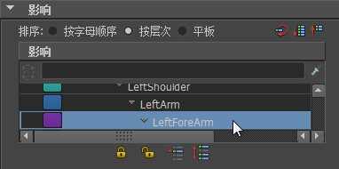

可在使用“绘制蒙皮权重工具”(Paint Skin Weights Tool)时旋转关节。这样，可在绘制蒙皮权重时，测试关节使绑定几何体变形的方式。
在使用“绘制蒙皮权重工具”(Paint Skin Weights Tool)时旋转关节
- 打开“绘制蒙皮权重工具”(Paint Skin Weights Tool)。
- 在工具设置的“影响”(Influences)列表中选择待旋转关节的名称。例如，LeftForeArm（肘部）。

- 在场景视图中，单击鼠标中键，从“绘制蒙皮权重工具”(Paint Skin Weights Tool)笔刷切换至旋转操纵器。

- 使用鼠标中键单击旋转时围绕的旋转轴，然后使用鼠标中键拖动以使关节绕选定的轴旋转。
- 按住上下箭头键来选择关节层次上下的其他关节。例如，沿关节层次移动至 LeftArm（肩部）或在层次中向下移动至 LeftForeArmRoll。
- 若要切换回“绘制蒙皮权重工具”(Paint Skin Weights Tool)笔刷，请单击当前选定的关节。